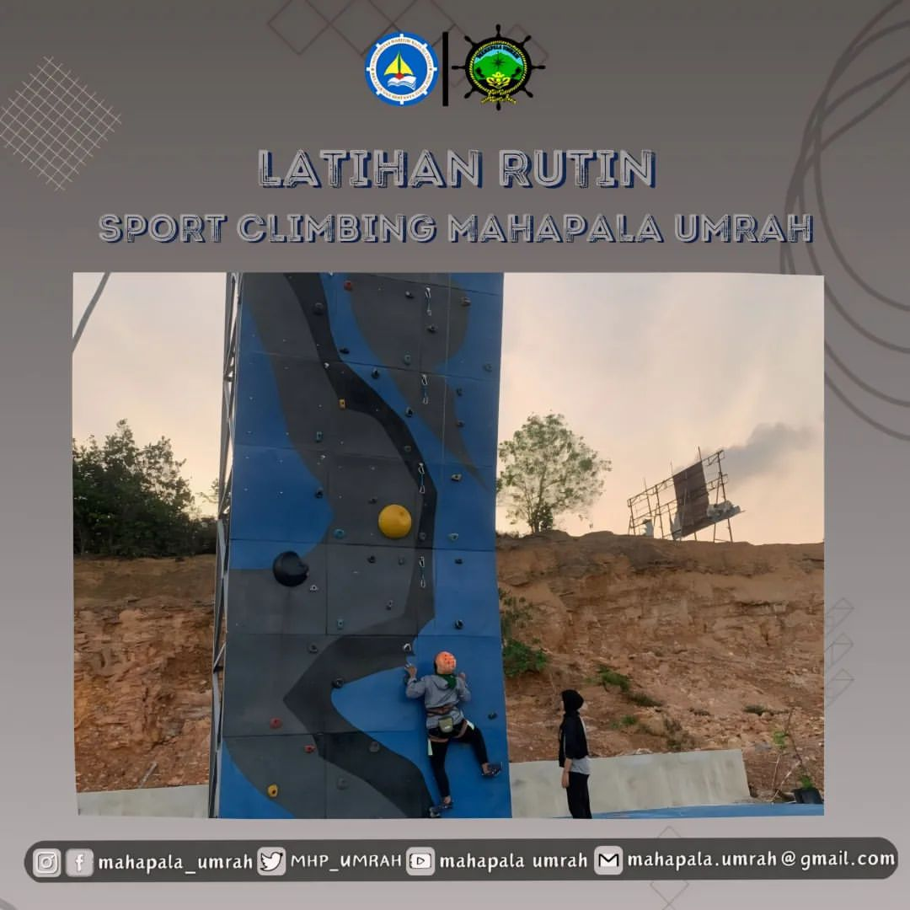

SILAHTURAHMI ANGGOTA

Pada Bulan Ramadhan lalu, Anggota Muda mengadakan kegiatan Green Ramadhan Tahunan yang pada saat itu, kegiatannya diberi nama "silahturahmi Sesama Anggota MAHAPALA" yang banyak dihadiri kakak maupun abang angkatan sebelumnya. kegiatan ini diadakan dengan penuh semangat dan khitmad. adapun kegiatan yang Dilakukan, mulai dari pagi, Anggota Muda dibantu Pengurus untuk memasak hidangan yang akan di sajikan, hingga menghias panggung yang akan di gunakan.